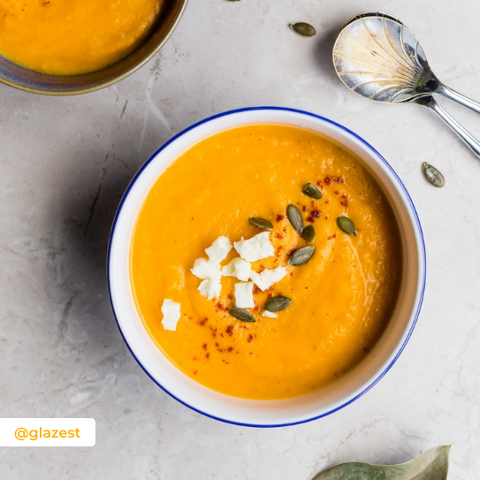

Готовь и делись рецептами
Никаких кулинарных книг и блокнотов! Храни все любимые рецепты в одном месте.



Тыквенный супчик на кокосовом молоке
Если у вас осталась тыква, и вы не знаете что с ней сделать, то это решение для вас! Ароматный, согревающий суп-пюре на кокосовом молоке. Можно даже в Пост!
356
 35 минут
35 минут
35 минут
Поиск рецептов
Введите примерное название блюда, а мы по тегам найдем его